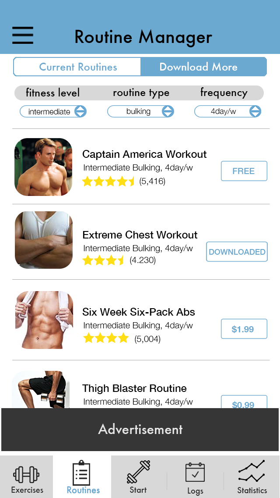

Summary
Project: Improve a health and wellness application's user experience through user-centered design methodologies. We chose Jefit.
Jefit is a mobile fitness application that enables users to track their progress, find and build custom routines, and connect with the fitness community to stay motivated towards a healthy lifestyle. My team and I set out to improve the design of the IOS application in order to create a better fitness experience. We utilized market research and a cognitive walkthrough to identify major usage frustrations. After, we iteratively designed and tested to create a great Jefit experience.
Our user-centered design process can be captured in these steps:
Empathize
A great design starts with a deep understanding of the audience. The typical Jefit user is a North American male around the age of 27. He is just starting out or is somewhat versed in fitness exercise, and desires an effective system to build his dream body.
Observe
We researched who the real Jefit users are by combing through Jefit forums and looking at web meta information from Google Trends and Alexa. We then observed some would be end-users work out a few times to understand a typical routine.
Engage
To build a better understanding we held some informal semi-structured interviews with end-users gaining insight to their values, motivations, and needs for their fitness goals.
Immerse
Every team member downloaded and used Jefit to gain an understanding of what it's like to use Jefit - this was invaluable to creating a better experience.
Define
Jefit holds a plethora of interactions for a user to perform, many which are well received. To identify where the application is lacking, we conducted market research and found the information architecture and how you navigate were the most problematic. We then hosted a cognitive walkthrough and observed how participants navigated and understood the most problematic areas.
Market Research
We analyzed over 600 user reviews from application stores. From these, we got 74 valuable insights into what areas of Jefit need improvement. This was great to gather lots of qualitative responses of real end users, quickly.
- tclary, iOS
"The UX is profoundly inefficient and unintuitive. After working for half an hour trying to customize a workout, I decided to dump it. It's way too cluttered."
Cognitive Walkthrough
We then hosted a cognitive walkthrough with five participants who talked aloud their thought process while demonstrating a few critical functions of Jefit.
For each task, we wanted to tell a credible story for these two questions:
- Will the user know what to do at this step?
- If the user does the right thing, will they know they did the right thing, and are making prrogress towards their goal?
The cognitive walkthrough helped us prioritize and focus the findings to redesign how you start manage routines, search for exercises, and download more routines.
Ideate
Our group brainstormed and group sketched to form creative solutions for how to overcome the difficulties users faced.
Brainstorm
Our brainstorming sessions focused on generating a high quantity of creative problem solving. We made sure to encourage wild ideas and deferred judgement.
Group Sketch
As with brainstorming, group sketching is vital to any UX process. This allowed us to synthesize ideas into wireframes for an appropriate solution.
Prototype
We rapidly prototyped different solutions and got them ready to test on people.
Rapid Prototyping
This was great for generating many designs. We were able to quickly mock some up with Axure and test them on participants.

Test
With our working Axure prototypes, we had a few new participants talk aloud the same tasks as the prior cognitive walkthrough. Participants then provided feedback on the usability of two redesigns. This helped identify the most usable ideas for high-fidelity mock ups.
Final Product
With our finalized designs we were able to make research based decisions on how to address the
the critical problems within Jefit's IOS interface: managing routines, downloading routines, and finding exercises.
We even added features we thought the business could benefit from as a whole!
Read the whole report here!
Our team is really proud of our redesigns, we hope you like them to! Many many thanks to Linlin Olivia Huang!
Jefit IOS Redesigned

Jefit IOS Original